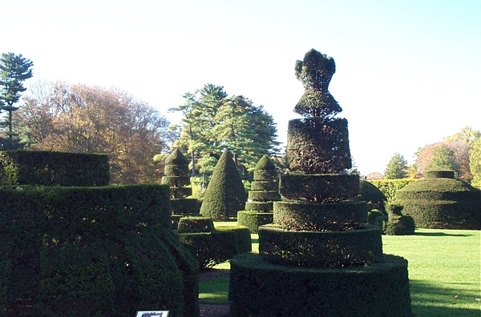

Thursday, December the 9th, 2004
back to: title, date or indexes
Hooting Yard's roving reporter Velma Nebraska writes to inform me that early in the twentieth century, there was a topiarist active in England named, delightfully, William Cutbush. He is mentioned in the splendid Topiary In The United Kingdom site created by Anthony Blagg, who—quote—“lives in Worcestershire with his wife, shears and family of ever growing topiary”.
Incidentally, a Google search for “famous topiarists” yielded a startling result—absolutely nil. What is the world coming to?

Some topiary—although not the splendid Mr Blagg's work, as far as I know